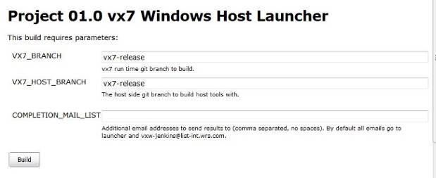
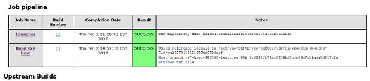
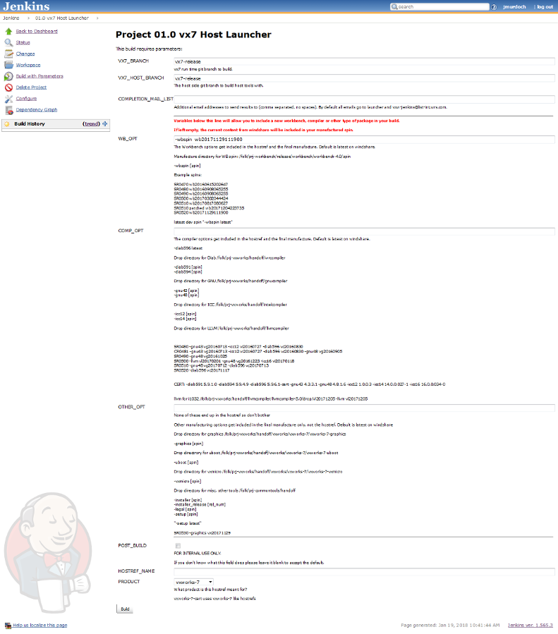
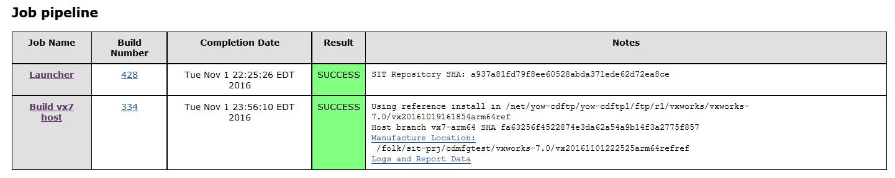

Pre-SR0600 VxWorks Host Tools¶
THIS PAGE IS CURRENTLY SERVING AS A PLACEHOLDER. IN PROGRESS for updates.
This document will outline the process to create and implement a VxWorks 7 host reference tools set.
(Source: https://jive.windriver.com/docs/DOC-51538)
Background¶
The VxWorks 7 host reference tool build process is complex and time consuming. In order to avoid imposing this build on each designer when they set up a new VxWorks git repo, a prepackaged hostref is defined by branch. The .hostref file found in the root of the VxWorks repo identifies the default hostref to be used. The following paragraphs will describe how this hostref package is created.
Setting up a GIT repo to build VxWorks 7 Host Tools¶
The VxWorks vx7_host repo is separate from the main VxWorks runtime vxworks repo. When developing VxWorks 7 host side tools, the vx7_host repo is embedded inside the vxworks repo.
git clone http://vxgit.wrs.com/scm/vx7/vxworks.git
git checkout -b your_vx7_branch (or use -b <your_branch_name> in git clone above)
cd vxworks
./setup-tools -host-development-branch <your_host_branch_name> (you can use the vx7-release host branch if you don’t have one yet)
You now have a vxworks repo on a separate branch (make sure to base your new branch on whatever base context of vx7 you will be working with) containing a vx7_host repo inside it
cd vxworks-7/host
git checkout -b your_host_branch (if you are creating a new branch from wherever you specified in -host-development-branch during setup-tools)
You now have a vxworks repo and a vx7_host repo branched so that you can make your changes. Before you can build your vx7 VSBs you will need to build the vx7 host tools.
make sure you are on a server with clearcase installed (yow-build31-lx, yow-build32-lx, yow-build37-lx), ct setview wrs.latest
cd vxworks
eval ./wrenv.linux -p helix -o print_env -f csh
make tornado
Now you can build a VSB/VIP, etc. in linux
Building Host Tools for Windows¶
Building windows host tools can be tricky. A Jenkins job is available http://vxjenkins.wrs.com:8080/job/vx7_SGndows_launcher/ to assist you. You must supply your runtime and host branch (available on the remote repository).

The job will build the windows host tools and archive them for you to download.

Right click on “Windows tar file” and save the tar file. You can then use the windows tar file contents in your host repo. The following directories are populated:
vxworks-7/host/
binutils mrt_tools x86-win32
Packaging Your New Hostref¶
If you are adding content to existing rpms for hostref use, modify the appropriate spec files in http://stash.wrs.com/projects/VX7/repos/vx7_host/browse/packaging .
To add new rpms to a hostref, create new spec files in http://stash.wrs.com/projects/VX7/repos/vx7_host/browse/packaging making sure the name of the rpms begin with “host-“. If you want to use a new “Group” folder identifier you will need to discuss this with Engineering Operations and the Product Manager to have the manufacturing process adjusted accordingly.
When you are satisfied with the changes you have made in your vx7_host repo, you can package your hostref by using the Jenkins job. Make sure your vx7_host and vxworks branches are pushed to the remote git server before launching your job. Use your branch names in the launch parameters. If you have specific compilers or workbench spins you want to incorporate, modify the parameters appropriately.

This job will take approximately 2 hours to complete.

The summary table will identify the location of the hostref. You can test your new hostref by installing it into your git repo:
setup-tools -installer /folk/sit-prj/cdmfgtest/vxworks-7.0/vx20161101222525arm64refref.
Making the Hostref Available to Others¶
Once you are happy with the contents of your hostref you can make it available to all R1 sites using the Jenkins job: http://vxjenkins.wrs.com:8080/job/vx7_push/ . It will take a few hours to propagate to all sites. Once it is available on R1, you can make it the default hostref for your vxworks repo by adding it to the .hostref file in your branch
git checkout your_vxworks_branch
cd vxworks
vi .hostref
Add the hostref name and SHA to the bottom of the file. E.g. “vx20161101222525arm64refref #fa63256f4522874e3da62a54a9b14f3a2775f857”
When this is committed and pushed, anyone using your branch will install your VxWorks host tools. If you make further changes to your host tools, this entire procedure must be redone.